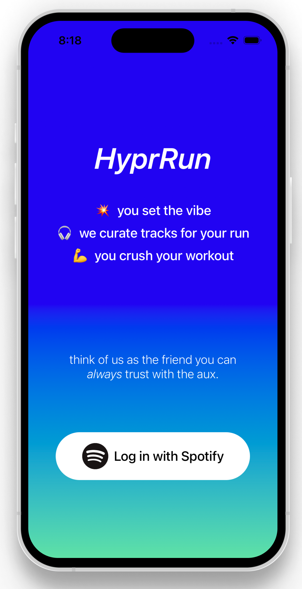
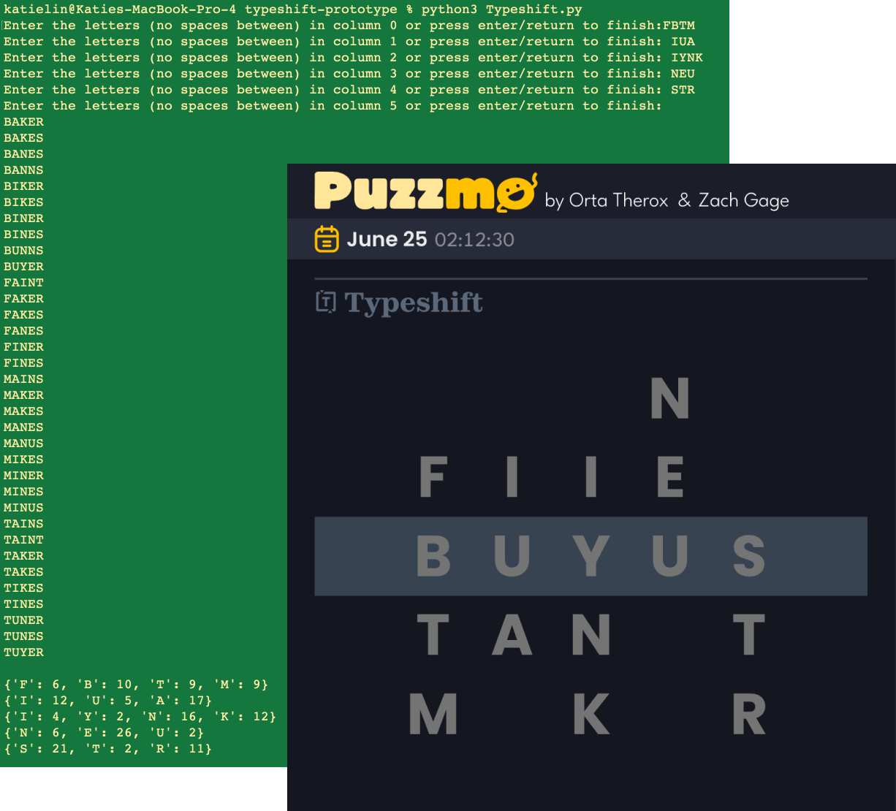

Hi, I'm Katie. I'm a software engineer and UX prototyper. My first job in the tech industry1 was doing product marketing at a small seed-stage startup. As with most startup gigs, I wore a lot of different hats. We only had one full-time product designer at the time, so, a few months in, I started taking on some smaller design tasks. I gravitated towards the work naturally and eventually transitioned into a full-fledged design role, straddling the lines between the product and engineering teams. All this means is that I'm just as comfortable creating components and variants in Figma as I am writing an API or developing a mobile app.
I just graduated 🎓 from Carnegie Mellon University with a B.S. in Information Systems.
What I'm proudest of from my time in college is the work I did as a teaching assistant in my last three semesters. During the spring of my junior year, I worked as a teaching assistant for 67-272: Application Design and Development2. I really enjoyed it and felt like it suited my abilities and personality well. I worked as a Head TA for 67-443: Mobile Application Development3 the following fall, and then served as the 'Curricular Development'4 Head TA for 67-272 throughout my senior spring.
WHAT I'M DOING NOW5
- Re-adjusting to operating on a PST schedule (I've been on EST on and off for the better part of 5 years)
- Curating my digital bookshelf and exploring the handmade web
- Playing a lot of Bananagrams
~ SOME THINGS I'VE MADE~
click a box to view its corresponding GitHub repo



COLOPHON
This website is a constant work in progress.
It uses pure HTML and CSS and no JavaScript.6 It's set in the system default font stack used by your operating system.
It will continue to be hosted via GitHub Pages until I find the time to set up my own VPS.
1. My actual first job was working at a Kumon center when I was 16. I did the math program there for several years, so it was already a familiar place to me. I mostly graded worksheets and helped with math problems (teaching algebra was my specialty).
2. This is one of the core classes in the Information Systems department at Carnegie Mellon. It's designed to be framework-agnostic so that students learn the fundamentals of building (web-based) applications and not just learning to use whatever framework is the trendiest at the moment. For the past several years, it's been taught using Ruby on Rails. In the spring of 2024, we added React on Rails to the curriculum and included a new section about reactive programming.
3. 67-443 is a project-based course that's mostly focused on iOS development. In certain years, an Android track has been offered alongside the iOS track, but the majority of students develop in Swift/SwiftUI. Students are also introduced to the Flutter framework, but don't use it extensively beyond a lab assignment and an in-class exercise.
4. I think this role and the experience I got from it are super unique, especially at the undergraduate level. My main responsibilities were to draft, write, and proof the exams we administer throughout the semester. Additionally, I also proofed and gave feedback on several lab write-ups and the specs for each phase of our semester-long project. With the continued rise of Generative AI, more weight and consideration is being given to written examinations than individual homework assignments or projects. Part of my job was to figure out how best to evaluate the students' growth w.r.t. our learning objectives within the constraints of a written 80 minute exam. If you're curious about any of this and want to know more, drop me an email. I've been interested in education and pedagogy for a while, and I'm always happy to chat about it.
5. This isn't a "now" page, persay, but it is a "now" section, à la Derek Sivers' nownownow.com
6. I promise it's not because I can't write JavaScript. Rather, I've intentionally avoided including any JS code on my site due to my personal feelings about the current state of the modern web and JavaScript bloat :/. To be clear, I have nothing against JavaScript itself, but I do think the rise in popularity of frameworks like React have led to the unnecessary employment of JavaScript on websites that serve mostly static content. There are several other issues that underlie this problem—far too many to enumerate in this footnote. But that's why I don't use JavaScript here.